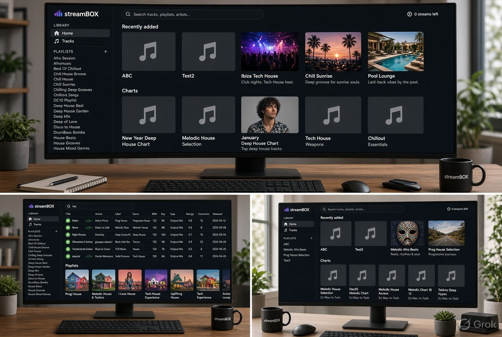

Music Streaming Desktop App Windows & macOS
Streambox is a desktop music streaming client for Windows and macOS, built with Qt 6 and C++. I migrated the codebase from Qt 5.15 to 6.7, added a universal macOS build with signed DMG packaging, and delivered a full UI refresh (login, playlists, charts, search). I fixed a login freeze on large libraries (1,800+ songs) by batching SQLite writes into scoped transactions, cutting sync time ~31×. I also added AES encryption for user data via OpenSSL and integrated the app with a companion DJ application through a shared database.